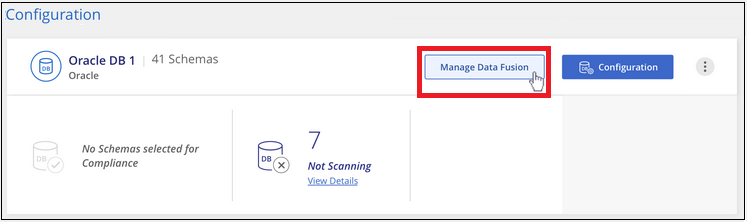
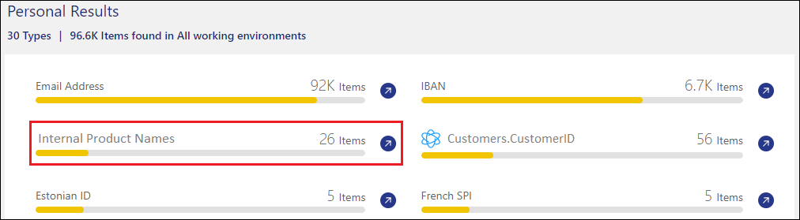
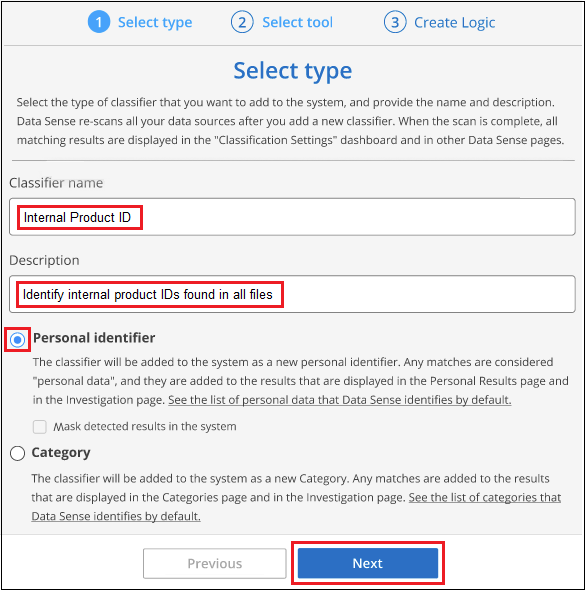
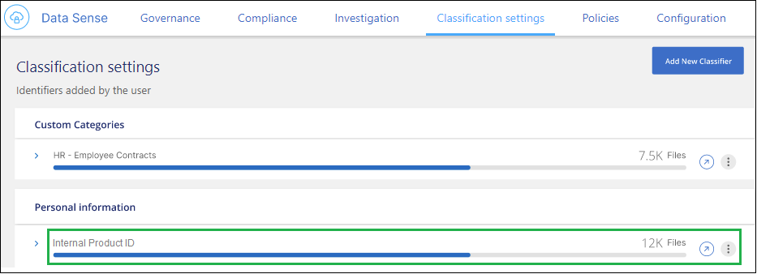
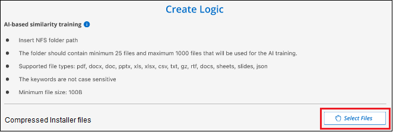
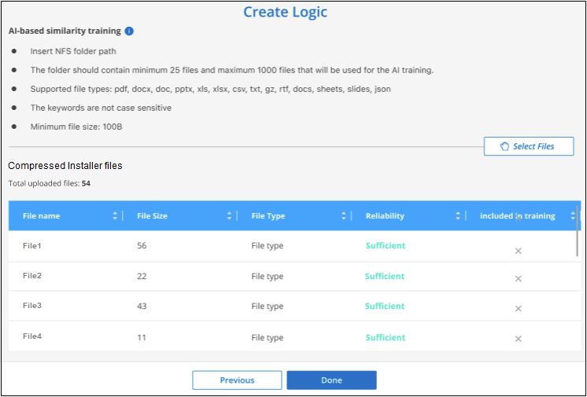

Notes de mise à jour
Notes de mise à jour
Ajoutez des identifiants de données personnels à vos analyses de classification BlueXP
 Suggérer des modifications
Suggérer des modifications
La classification BlueXP offre de nombreuses façons d'ajouter une liste personnalisée des « données personnelles » que la classification BlueXP identifiera dans les analyses futures. Vous disposez ainsi d'une vue d'ensemble sur l'emplacement des données potentiellement sensibles dans tous les fichiers de votre entreprise.
-
Vous pouvez ajouter des identificateurs uniques basés sur des colonnes spécifiques dans les bases de données que vous numérisez.
-
Vous pouvez ajouter des mots-clés personnalisés à partir d'un fichier texte — ces mots sont identifiés dans vos données.
-
Vous pouvez ajouter un motif personnel à l'aide d'une expression régulière (regex) — le regex est ajouté aux motifs prédéfinis existants.
-
Vous pouvez ajouter des catégories personnalisées afin d'identifier l'emplacement de catégories d'informations spécifiques dans vos données.
Tous ces mécanismes pour ajouter des critères de numérisation personnalisés sont pris en charge dans toutes les langues.

|
Les fonctionnalités décrites dans cette section ne sont disponibles que si vous avez choisi d'effectuer une analyse de classification complète sur vos sources de données. Les sources de données qui ont une analyse avec mappage uniquement n'affichent pas de détails au niveau des fichiers. |
Ajoutez des identifiants de données personnelles personnalisés à partir de vos bases de données
Une fonctionnalité que nous appelons Data Fusion vous permet d'analyser les données de votre organisation pour identifier si des identificateurs uniques de vos bases de données sont trouvés dans l'une de vos autres sources de données. Vous pouvez choisir les identifiants supplémentaires que recherche la classification BlueXP dans ses analyses en sélectionnant une ou plusieurs colonnes spécifiques dans une table de base de données. Par exemple, le diagramme ci-dessous montre comment Data Fusion est utilisé pour analyser vos volumes, compartiments et bases de données pour rechercher les occurrences de tous vos identifiants client à partir de votre base de données Oracle.

Comme vous pouvez le voir, deux ID de client uniques ont été trouvés sur deux volumes et dans un compartiment S3. Toutes les correspondances dans les tables de base de données seront également identifiées.
Notez que, puisque vous scannez vos propres bases de données, quelle que soit la langue dans laquelle vos données sont stockées, elles seront utilisées pour identifier les données lors des futures analyses de classification BlueXP.
Vous devez avoir "ajout d'au moins un serveur de base de données" À la classification BlueXP avant d'ajouter des sources de données Fusion.
-
Dans la page Configuration, cliquez sur gérer Fusion de données dans la base de données où résident les données source.

-
Cliquez sur Ajouter une source de données Fusion sur la page suivante.
-
Dans la page Add Data Fusion Source :
-
Sélectionnez le schéma de la base de données dans le menu déroulant.
-
Entrez le nom de la table dans ce schéma.
-
Entrez la colonne ou les colonnes contenant les identifiants uniques que vous souhaitez utiliser.
Lors de l'ajout de plusieurs colonnes, entrez chaque nom de colonne ou de vue de table sur une ligne distincte.

-
-
Cliquez sur Ajouter une source de données Fusion.

Après l'analyse suivante, les résultats incluent ces nouvelles informations dans le tableau de bord de conformité sous la section « Résultats personnels » et dans la page Investigation du filtre « données personnelles ». Le nom que vous avez utilisé pour le classificateur apparaît dans la liste de filtres, par exemple Customers.CustomerID.

Supprimer une source de Data Fusion
Si vous décidez à un moment donné de ne pas numériser vos fichiers à l'aide d'une source Data Fusion donnée, vous pouvez sélectionner la ligne source dans la page d'inventaire Data Fusion et cliquer sur Supprimer la source Data Fusion.

Ajoutez des mots clés personnalisés à partir d'une liste de mots
Vous pouvez ajouter des mots-clés personnalisés à la classification BlueXP pour identifier l'emplacement où se trouvent les informations. Pour ajouter ces mots-clés, entrez simplement les mots que vous souhaitez que la classification BlueXP reconnaisse. Les mots-clés sont ajoutés aux mots-clés prédéfinis que la classification BlueXP utilise déjà et les résultats sont visibles dans la section modèles personnels.
Par exemple, vous pouvez voir où les noms de produits internes sont mentionnés dans tous vos fichiers pour vous assurer que ces noms ne sont pas accessibles dans des emplacements qui ne sont pas sécurisés.
Après la mise à jour des mots-clés personnalisés, la classification BlueXP redémarre l'analyse de toutes les sources de données. Une fois l'analyse terminée, les nouveaux résultats apparaissent dans le tableau de bord de conformité de classification BlueXP, dans la section « Résultats personnels », et dans la page Investigation du filtre « données personnelles ».
-
Dans l'onglet Paramètres de classification, cliquez sur Ajouter un nouveau classificateur pour lancer l'assistant Ajouter un classificateur personnalisé.

-
Dans la page Select type, entrez le nom du classificateur, fournissez une brève description, sélectionnez Personal identifier, puis cliquez sur Next.
Le nom que vous entrez s'affiche dans l'interface de classification BlueXP en tant qu'en-tête pour les fichiers numérisés qui correspondent aux exigences du classificateur et en tant que nom du filtre dans la page Investigation.
Vous pouvez également cocher la case « Masquer les résultats détectés dans le système » pour que le résultat complet n'apparaisse pas dans l'interface utilisateur. Par exemple, vous pouvez vouloir le faire pour masquer les numéros de carte de crédit complets ou des données personnelles similaires (le masque apparaîtra dans l'interface utilisateur comme ceci: "Pass:[**] **** **** ****" 3434).

-
Dans la page Select Data Analysis Tool, sélectionnez Custom Keywords comme méthode à utiliser pour définir le classificateur, puis cliquez sur Next.

-
Dans la page Create Logic, entrez les mots-clés que vous voulez reconnaître - chaque mot sur une ligne séparée - et cliquez sur Validate.
La capture d'écran ci-dessous montre les noms de produits internes (différents types de wls). La recherche de classification BlueXP pour ces éléments n'est pas sensible à la casse.

-
Cliquez sur terminé et la classification BlueXP commence à analyser à nouveau vos données.
Une fois l'analyse terminée, les résultats incluront ces nouvelles informations dans le tableau de bord de conformité sous la section « Résultats personnels » et dans la page enquête du filtre « données personnelles ».

Comme vous pouvez le voir, le nom du classificateur est utilisé comme nom dans le panneau Résultats personnels. De cette manière, vous pouvez activer de nombreux groupes de mots-clés et voir les résultats pour chaque groupe.
Ajoutez des identificateurs de données personnelles personnalisés à l'aide d'un regex
Vous pouvez ajouter un modèle personnel pour identifier des informations spécifiques dans vos données à l'aide d'une expression régulière personnalisée (regex). Cela vous permet de créer un nouveau regex personnalisé pour identifier de nouveaux éléments d'informations personnelles qui n'existent pas encore dans le système. Le regex est ajouté aux modèles prédéfinis existants que la classification BlueXP utilise déjà, et les résultats seront visibles dans la section modèles personnels.
Par exemple, vous pouvez voir où vos ID de produit internes sont mentionnés dans tous vos fichiers. Si l'ID de produit a une structure claire, par exemple, il s'agit d'un numéro à 12 chiffres commençant par 201, vous pouvez utiliser la fonction regex personnalisée pour la rechercher dans vos fichiers. L'expression régulière de cet exemple est \b201\d{9}\b.
Une fois le regex ajouté, la classification BlueXP redémarre l'analyse de toutes les sources de données. Une fois l'analyse terminée, les nouveaux résultats apparaissent dans le tableau de bord de conformité de classification BlueXP, dans la section « Résultats personnels », et dans la page Investigation du filtre « données personnelles ».
Voir https://regex101.com/ si vous avez besoin d'aide pour construire l'expression régulière que vous avez besoin. Choisissez Python pour que la saveur puisse voir les types de résultats que la classification BlueXP correspond à l'expression régulière.
|
|
Actuellement, nous n'autorisons pas l'utilisation d'indicateurs de motif lors de la création d'un regex - cela signifie que vous ne devez pas utiliser "/". |
-
Dans l'onglet Paramètres de classification, cliquez sur Ajouter un nouveau classificateur pour lancer l'assistant Ajouter un classificateur personnalisé.
-
Dans la page Select type, entrez le nom du classificateur, fournissez une brève description, sélectionnez Personal identifier, puis cliquez sur Next.
Le nom que vous entrez s'affiche dans l'interface de classification BlueXP en tant qu'en-tête pour les fichiers numérisés qui correspondent aux exigences du classificateur et en tant que nom du filtre dans la page Investigation. Vous pouvez également cocher la case « Masquer les résultats détectés dans le système » pour que le résultat complet n'apparaisse pas dans l'interface utilisateur. Par exemple, vous pouvez vouloir le faire pour masquer les numéros complets de carte de crédit ou des données personnelles similaires.

-
Dans la page Select Data Analysis Tool, sélectionnez Custom Regular expression comme méthode à utiliser pour définir le classificateur, puis cliquez sur Next.

-
Dans la page Create Logic, entrez l'expression régulière et les mots de proximité, puis cliquez sur Done.
-
Vous pouvez entrer n'importe quelle expression régulière légale. Cliquez sur le bouton Valider pour que la classification BlueXP vérifie que l'expression régulière est valide et qu'elle n'est pas trop large, ce qui signifie qu'elle renvoie trop de résultats.
-
Vous pouvez également saisir des mots de proximité pour vous aider à affiner la précision des résultats. Il s'agit de mots qui se trouvent généralement dans les 300 caractères du motif que vous recherchez (avant ou après le motif trouvé). Entrez chaque mot ou expression sur une ligne distincte.

-
Le classificateur est ajouté et la classification BlueXP commence à analyser à nouveau toutes vos sources de données. Vous revenez à la page Classificateurs personnalisés où vous pouvez afficher le nombre de fichiers correspondant à votre nouveau classificateur. Les résultats de l'analyse de toutes vos sources de données prennent du temps en fonction du nombre de fichiers à numériser.

Ajouter des catégories personnalisées
La classification BlueXP récupère les données qu'il analyse et les divise en différents types de catégories. Ces catégories sont des thèmes basés sur l'analyse par intelligence artificielle du contenu et des métadonnées de chaque fichier. "Voir la liste des catégories prédéfinies".
Les catégories peuvent vous aider à comprendre ce qui se passe avec vos données en vous montrant les types d'informations dont vous disposez. Par exemple, une catégorie telle que CV ou contrats d'employés peut inclure des données sensibles. Lorsque vous étudiez les résultats, vous pouvez constater que les contrats d'employés sont stockés dans un emplacement non sécurisé. Vous pouvez ensuite corriger ce problème.
Vous pouvez ajouter des catégories personnalisées à la classification BlueXP pour identifier où se trouvent les catégories d'informations spécifiques à votre patrimoine de données. Vous ajoutez chaque catégorie en créant des fichiers d'entraînement qui contiennent les catégories de données que vous souhaitez identifier, puis analysez ces fichiers pour les analyser par le biais de l'IA afin qu'il puisse identifier les données dans vos sources de données. Les catégories sont ajoutées aux catégories prédéfinies existantes identifiées par la classification BlueXP et les résultats sont visibles dans la section catégories.
Par exemple, vous pouvez voir où se trouvent les fichiers d'installation compressés au format .gz dans vos fichiers afin que vous puissiez les supprimer, si nécessaire.
Après la mise à jour des catégories personnalisées, la classification BlueXP redémarre l'analyse de toutes les sources de données. Une fois l'analyse terminée, les nouveaux résultats apparaissent dans le tableau de bord de conformité de classification BlueXP sous la section « catégories » et dans la page Investigation du filtre « Catégorie ». "Voir comment afficher les fichiers par catégories".
Vous devez créer au moins 25 fichiers d'entraînement contenant des échantillons des catégories de données que vous voulez que la classification BlueXP reconnaisse. Les types de fichiers suivants sont pris en charge :
.CSV, .DOC, .DOCX, .GZ, .JSON, .PDF, .PPTX, .RTF, .TXT, .XLS, .XLSX, Docs, Sheets, and Slides
Les fichiers doivent être d'au moins 100 octets et doivent se trouver dans un dossier accessible par la classification BlueXP.
-
Dans l'onglet Paramètres de classification, cliquez sur Ajouter un nouveau classificateur pour lancer l'assistant Ajouter un classificateur personnalisé.
-
Dans la page Select type, entrez le nom du classificateur, fournissez une brève description, sélectionnez Catégorie, puis cliquez sur Suivant.
Le nom que vous entrez s'affiche dans l'interface de classification BlueXP en tant qu'en-tête des fichiers numérisés correspondant à la catégorie de données que vous définissez, et en tant que nom du filtre dans la page Investigation.

-
Dans la page Créer logique, assurez-vous que les fichiers d'apprentissage sont préparés, puis cliquez sur Sélectionner les fichiers.

-
Entrez l'adresse IP du volume et le chemin où se trouvent les fichiers de formation, puis cliquez sur Ajouter.

-
Vérifiez que les fichiers d'entraînement ont été reconnus par la classification BlueXP. Cliquez sur x pour supprimer tous les fichiers de formation qui ne répondent pas aux exigences. Cliquez ensuite sur terminé.

La nouvelle catégorie est créée telle que définie par les fichiers d'entraînement et ajoutée à la classification BlueXP. La classification BlueXP commence ensuite à analyser à nouveau toutes vos sources de données pour identifier les fichiers qui s'intègrent à cette nouvelle catégorie. Vous êtes renvoyé à la page Classifications personnalisées où vous pouvez afficher le nombre de fichiers correspondant à votre nouvelle catégorie. Les résultats de l'analyse de toutes vos sources de données prennent du temps en fonction du nombre de fichiers à numériser.
Afficher les résultats de vos classificateurs personnalisés
Vous pouvez afficher les résultats de n'importe lequel de vos classificateurs personnalisés dans le tableau de bord de conformité et dans la page Investigation. Par exemple, cette capture d'écran affiche les informations correspondantes dans le tableau de bord de conformité, sous la section « Résultats personnels ».

Cliquez sur le bouton  Pour afficher les résultats détaillés dans la page Investigation.
Pour afficher les résultats détaillés dans la page Investigation.
En outre, tous les résultats de votre classificateur personnalisé apparaissent dans l'onglet Classificateurs personnalisés, et les 6 meilleurs résultats de classificateur personnalisé sont affichés dans le tableau de bord de conformité, comme illustré ci-dessous.

Gérer les classificateurs personnalisés
Vous pouvez modifier n'importe lequel des classificateurs personnalisés que vous avez créés à l'aide du bouton Edit Classificateur.

|
Vous ne pouvez pas modifier les classificateurs Data Fusion pour le moment. |
Et si vous décidez ultérieurement que vous n'avez pas besoin de la classification BlueXP pour identifier les modèles personnalisés que vous avez ajoutés, vous pouvez utiliser le bouton Supprimer le classificateur pour supprimer chaque élément.